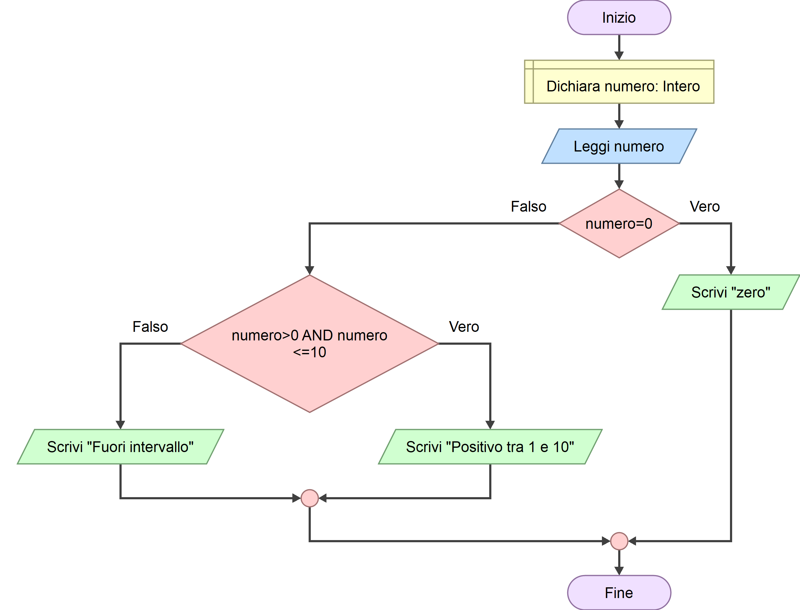

0–10 minuti
Ripartiamo dalla 2.05.
Lezione speciale · Durata prevista: circa 2 ore
Lezione sincrona guidata — AND, OR, NOT e decisioni dentro altre decisioni
Otto tappe brevi, con una pausa dopo il primo laboratorio.
Ripartiamo dalla 2.05.
Scopriamo AND, OR e NOT.
Primo laboratorio Flowgorithm.
Pausa di 5 minuti.
Una decisione dentro un'altra.
Adesso guidi tu.
Raccontami il diagramma.
Autoverifica finale.
Oggi conta soprattutto capire, prevedere e spiegare a voce.
Nella lezione precedente una condizione permetteva di scegliere tra il ramo vero e il ramo falso.
Per partecipare a un'attività occorre avere almeno 14 anni e essere alti almeno 150 cm.
eta >= 14 AND altezza >= 150Prima di continuare: per ogni caso, di' se la persona può partecipare e spiega perché.
| Età | Altezza | La prima richiesta? | La seconda richiesta? |
|---|---|---|---|
| 15 anni | 160 cm | Rispettata | Rispettata |
| 15 anni | 145 cm | Rispettata | Non rispettata |
| 13 anni | 160 cm | Non rispettata | Rispettata |
Può partecipare soltanto il primo caso. AND significa che devono essere vere entrambe le condizioni. Se anche una sola è falsa, tutta la condizione composta è falsa.
Collega due condizioni e produce vero soltanto quando entrambe sono vere.
È prevista una riduzione per chi ha meno di 18 anni oppure almeno 65 anni.
eta < 18 OR eta >= 65Prima di continuare: prova le età 16, 30 e 70. Chi riceve la riduzione?
eta < 18 è vera.eta >= 65 è vera.Collega due condizioni e produce vero quando almeno una delle due è vera.
Partiamo da una condizione relazionale che conosci già:
numero > 10Prima viene valutata questa condizione. Poi NOT ne capovolge il risultato:
NOT (numero > 10)Se la prima condizione è falsa, con NOT diventa vera. Se la prima condizione è vera, con NOT diventa falsa.
Domanda lampo: se numero vale 7, quanto vale numero > 10? E quanto vale NOT (numero > 10)?
numero > 10 è falsa; NOT (numero > 10) è vera.
Problema: leggere età e altezza di una persona. Mostrare Puoi partecipare
se ha almeno 14 anni e un'altezza di almeno 150 cm; altrimenti mostrare Requisiti non soddisfatti
.
Individua il risultato che il programma deve comunicare.
Di' i nomi e i tipi delle due variabili.
Scrivila sul quaderno prima di aprire un blocco decisionale.
Decidi il risultato atteso per 15 e 160, per 15 e 145, per 13 e 160.
Inserisci un blocco alla volta e spiega a voce che cosa stai aggiungendo.
Segui con il dito il ramo previsto per il primo caso.
Esegui il diagramma e confronta ogni risultato con la previsione.
Servono eta e altezza. Puoi dichiararle come Integer.
Usa eta >= 14 AND altezza >= 150.
LEGGI eta
LEGGI altezza
SE eta >= 14 AND altezza >= 150 ALLORA
SCRIVI "Puoi partecipare"
ALTRIMENTI
SCRIVI "Requisiti non soddisfatti"
FINE SEIl primo caso segue il ramo vero. Gli altri due seguono il ramo falso.
Vogliamo classificare un numero come positivo, negativo oppure zero. Una sola domanda offre soltanto due rami, quindi nel ramo falso facciamo una seconda domanda.
SE numero > 0 ALLORA
SCRIVI "positivo"
ALTRIMENTI
SE numero < 0 ALLORA
SCRIVI "negativo"
ALTRIMENTI
SCRIVI "zero"
FINE SE
FINE SEUna decisione che viene presa all'interno di un ramo di un'altra decisione.
Prima di continuare: segui il percorso di ogni dato. Rispondi sempre alle cinque domande: qual è la prima condizione, è vera o falsa, quale ramo seguiamo, incontriamo un'altra condizione, quale output otteniamo?
8numero > 0.positivo.
-3numero > 0.numero < 0.negativo.
0numero < 0.zero.
Condividi lo schermo e prendi la guida. Il docente darà soltanto gli indizi necessari.
Problema: un'attività prevede accesso avanzato per chi ha almeno 14 anni e un punteggio di almeno 9; accesso base per chi ha almeno 14 anni e un punteggio da 6 a meno di 9; negli altri casi i requisiti non sono soddisfatti.
Non costruire ancora nulla.
Scegli nome e tipo delle variabili.
Deve controllare insieme età e punteggio minimo.
Crea dichiarazioni, input e prima selezione.
Spiega che cosa sappiamo quando il primo ramo è vero.
Che cosa manca per distinguere accesso base e avanzato?
Inserisci la seconda decisione nel ramo corretto.
Devono raggiungere i tre output possibili.
Fallo prima di ogni esecuzione.
Prova il diagramma in Flowgorithm.
Per ogni prova, spiega se risultato previsto e risultato reale coincidono.
Puoi usare eta >= 14 AND punteggio >= 6. Se è falsa, l'output è Requisiti non soddisfatti
.
Nel ramo vero chiedi se punteggio >= 9. Il ramo vero produce Accesso avanzato
; quello falso produce Accesso base
.
Non eseguire il diagramma in Flowgorithm. Osservalo e prova a raccontare a voce cosa succede, seguendo il flusso dall'alto verso il basso.

Il diagramma dichiara un numero intero e ne legge il valore. Prima controlla se il numero è uguale a zero. Se la condizione è vera, scrive zero
. Se è falsa, controlla se il numero è maggiore di zero e minore o uguale a 10. Se entrambe le parti sono vere, scrive Positivo tra 1 e 10
; altrimenti scrive Fuori intervallo
.
Rispondi prima di aprire ogni soluzione.
Devono essere vere entrambe.
No. È sufficiente che almeno una sia vera.
Capovolge il valore logico di una condizione: vero diventa falso e falso diventa vero.
È una decisione inserita all'interno di un ramo di un'altra decisione.
Parti dall'input, valuta una condizione alla volta e segui soltanto il ramo corrispondente fino all'output.
Conclusione
La comprensione del percorso conta più della memoria.
Descrivi a voce la differenza tra AND e OR, poi inventa un esempio di decisione dentro un'altra.